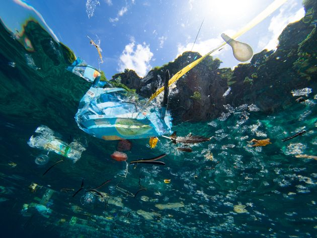
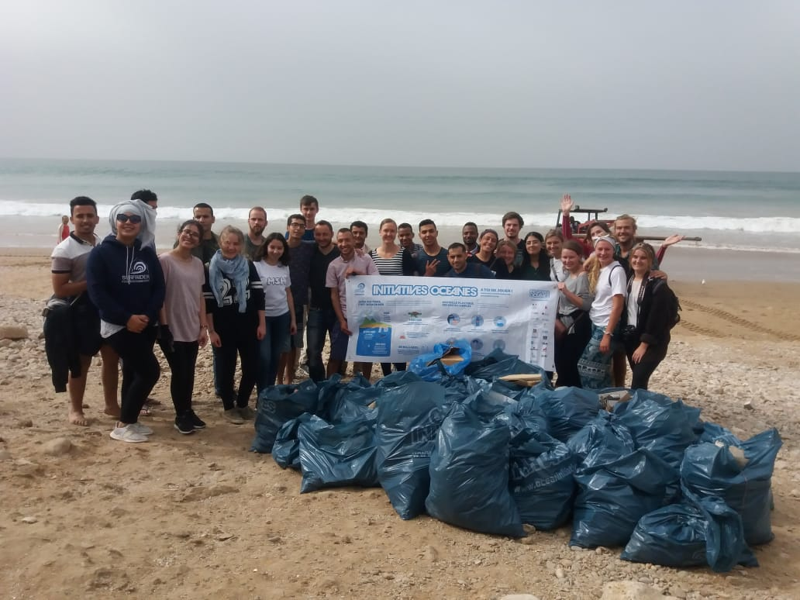

Des solutions ?
Ce problème écologique devient une urgence. Les solutions technologiques cherchant à filtrer les mers sont peu adaptées à la situation. Il est donc primordial de sensibiliser la population pour changer nos comportements envers les déversements de déchets afin de rendre nos mers et océans plus propres et plus vivable.
Changer nos comportements pour dépolluer
Des méthodes technologiques sont mises en place pour dépolluer nos océans, mais à l’échelle individuelle le plus efficace est de changer nos comportements.
La suppression totale des déchets marins est considérée comme impossible par les chercheurs. La vraie solution réside dans la modification de nos habitudes, qui commence par des gestes simples. Il suffit simplement de ne plus se débarasser de ses déchets dans les océans et les mers pour réduire de manière considérable la proportion de plastique dans les fonds marins.
Initiatives Océanes au Maroc.
Des organisations comme Surfrider lancent des opérations tel que « initiatives Océanes ».
Accompagnés de volontaires ces mouvements ont pour but de nettoyer les plages
En 2018 cette même association a récolté 256 kg de déchets plastiques, 256 kg de déchets qui aurait pu envahir nos océans. Des chiffres qui soulignent une urgence écologique.
Mais encore, la société Expédition Septième Continent s’est lancé dans des expéditions depuis 2013, dans le but d’étudier le continent de plastique. Depuis 2015 elle organise des journées pédagogiques en collaboration avec l’agence de l’eau Seine Normandie afin de ramasser des déchets en compagnie de collégiens et de lycéens.
Programme d’ « Expedition 7e continent » de 2017
De plus elle organise des mouvements médiatiques autour de la sensibilisation à fin de mettre en œuvre des solutions par les collectivités.
De plus le skipper Patrick Deixonne A rejoint ce mouvement pour alerter le public sur ce problème.
Une mobilisation technologique
Les progrès technologiques peuvent envisager une filtration des océans, même si cela n’est pas à la portée de tout le monde. Boyan Slat, un néerlandais, a développé un projet nommé Ocean Cleanup mettant en scène un prototype de barrières flottantes.
Fabriqué avec deux bras gonflables, et ne nécessitant aucun bateau, cette invention récupère les débris à l’aide des courants des fonds marins, qui les amène jusqu’à un filet permettant de les sortir de l’eau.
D’ici 2020 il souhaite créer et déposer dans l’océan Pacifique, le même dispositif 100 fois plus gros.
Premier prototype de Ocean Cleanup créé par Boyan Slat.
En déployant un de ces systèmes durant 10 ans, nous pourrions nettoyer la moitié de la grande plaque de déchets du Pacifique
Boyan Slat
À l’échelle nationale la Fance a interdit l’usage de sac plastique dans le commerce en juillet 2016 afin de ne pas aggraver ce problème déjà considéré comme impératif.